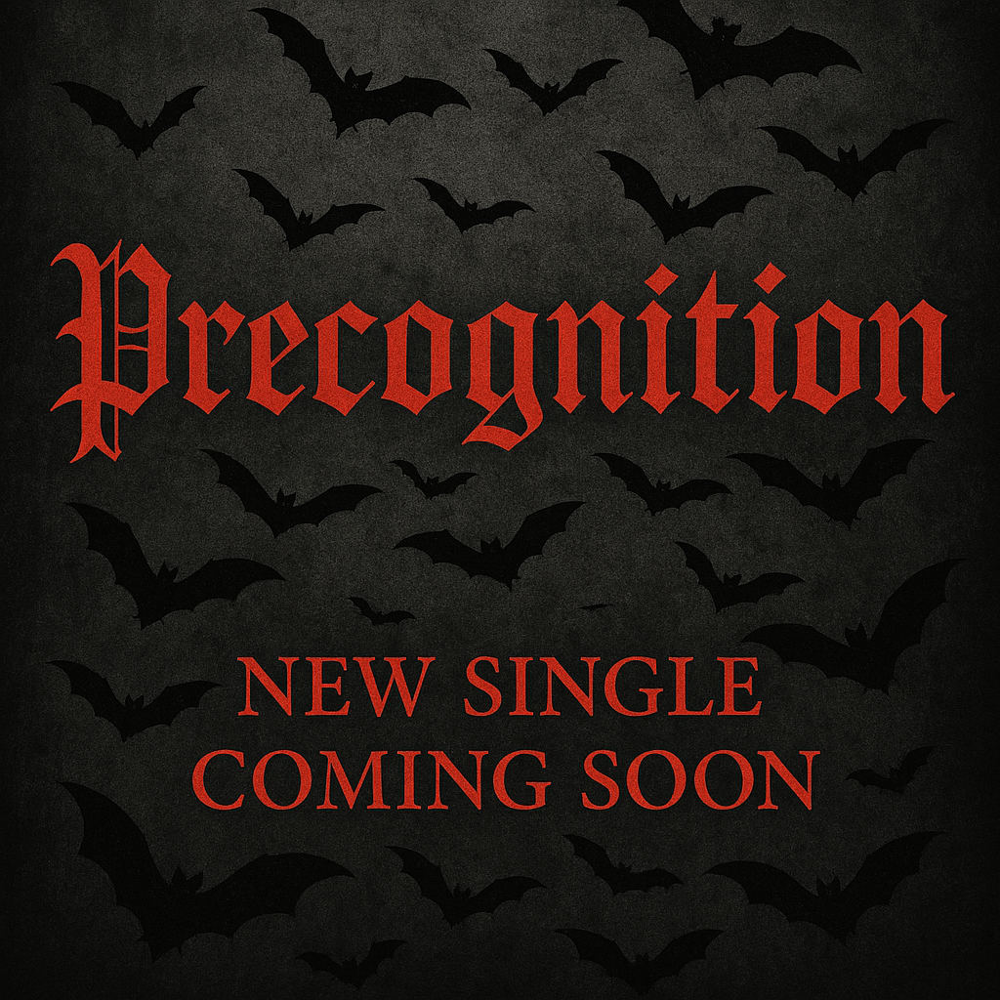

[Verse 1]
I’ve been chasing all your echoes
And I’m just hanging on the words
You never say, but want to
[Pre-Chorus]
I don’t need a diamond promise
I don’t need a perfect view
Just three small words, soft and honest
To know your heart breaks too
[Chorus]
Say you love me too
Don’t leave me in the blue
I’m pouring out, soul exposed
And every breath is you
You don’t have to shout it loud
Just whisper like you do
But baby don’t leave me hollow—
Say you love me too
[Verse 2]
You hide me from your friends
I’m your secret end — E-N-D
The one you crave in silence
But never let them see
Promise me you’ll lock me up
Deep inside your heart
Promise me you’ll tie me down
And tear my fear apart
Promise me you’ll bend to me
Like a storm surrenders rain
Promise me you’ll burn with me
And never hide the flame
[Pre-Chorus]
You don’t have to be a poet
Just be wild and be true
Let your body speak what’s buried
If your lips still fear the truth
[Chorus]
Say you love me too
Don’t leave me in the blue
I’m drowning in the spaces
Where your silence blooms
You don’t have to swear forever
Just say what’s deep in you
But baby, don’t keep me waiting—
Say you love me too
[Bridge]
I would break to build you heaven
Bleed to feel your soul on mine
I would fall if you would catch me
And hold me past the end of time
So promise me you’ll burn with me
'Til there’s nothing left but light
Promise me you’ll hold me close
And never say goodbye
[Final Chorus]
Say you love me too
From somewhere real in you
You don’t have to say it perfect
Just let it feel like truth
Don’t keep me in the shadows, baby—
Say you love me too
Static hums in the void of my mind. I’m a machine that’s breaking, left behind. Her shadow lingers just out of reach— Her voice, a whisper in the circuits that breach. And the miles are wires; the silence screams, The haunting echoes in fractured dreams. I claw at the walls of this cold decay, But the void is laughing—she’s too far away. I wanna see her, but this distance kills, A fever burning through electric chills. The sky is collapsing, and I won’t stay— I’m drowning and longing. She’s too far away.
It takes a minute—just a minute—for a heart to break. It takes a minute—just a minute—for a heart to ache and break apart. It takes a minute for a heart to ache And break apart at the seams, Like it’s nothing. Gotta take your time To put it all back again. How annoying. Give me a minute—my heart is broken. Give me a minute—my heart is broken, I’m choking. Give me a minute—my heart is broken, I’m choking. A minute is a lifetime When you’re breathing in outer space. A minute is a lifetime When you’re breathing in outer space. A minute is a lifetime When you’re underwater. A minute is a lifetime When you’re underwater. A minute is a lifetime When you’re in outer space. A minute is a lifetime When you’re looking in the face.
In the velvet sky, she walks alone, A whisper in the midnight, carved in stone. Candlelight and crescent moons— She weaves magic with her silver tunes. She’s not the kind you run from... She’s the spark you chase. With stardust in her hair, And fire in her embrace— Oh, a witch with a heart so pure, Casting light where the dark is unsure. With a single touch, she calms the storm. A taste of her love, and I’m reborn. Through forests deep, and rivers wide, She pulls the tide with just her mind. A spellbound soul—I fell so fast. One bite of her kiss, and I’m hooked at last. She sees the truth beneath the lies. She reads my soul behind my eyes. You’re magic—wild and free. You’re the only spell I’ll ever need. Oh, the witch of the stars above... You turn my fear into fearless love. One taste, and I’m thirsty forevermore. You’re the flame, The myth, The open door. The open door.
I just wanna get high, I just wanna hide, I just wanna fly— All the time, all the time. I just wanna feel free, Wanna drown in the sky, Lose the weight that’s on me— All the time, all the time. I paint on a smile, but I’m barely awake. Dreams heavy like chains that I just can’t break. People talk loud, but they don’t say a thing— I’m a ghost in a crowd wearing diamond rings. Numb to the love and the hate and the lies, I light up one just to quiet my mind. Running from the demons that live in my head— I left with a smoke, and I danced with regret. These scars aren’t showing on the outside, But they bleed every night inside my mind. I just wanna get high, I just wanna hide, I just wanna fly— All the time, all the time. I just wanna feel free, Wanna drown in the sky, Lose the weight that’s on me— All the time, all the time. Tired of people that say they care, But vanish the moment I’m gasping for air. I’ve got angels who left, and some devils that stayed. I’ve got memories screaming—they never fade. I wear my pain like a second skin. Pop another truth just to tuck it in. They say I’m strong, but they don’t see the fall. I’m a king with no crown, up against the wall. Maybe I’ll make it, maybe I won’t. Maybe I’ll say it, maybe I don’t. The silence is louder than anything else— So I talk to the moon and nobody else. I just wanna get high, I just wanna hide, I just wanna fly— All the time, all the time. I just wanna feel free, Wanna drown in the sky.
I, I don’t wanna hold it back, Not anymore. Every time I see your face, I feel it at the core. This love ain’t a secret, it ain’t some big reveal— It’s just how I feel. And it’s real, Yeah, it’s real. I don’t need a movie scene, No fireworks above, Just the quiet kind of magic When you look at me with love. I love you, and I want that to be— Something soft, something strong, Something steady and free. Not a whisper in the dark, Not a word we fear to say, But something normal, like the sun every day. Let’s make it normal, to love this way. No pressure to be perfect, No lines we have to read. I just wanna meet you where Your soul and silence bleed. Let’s write a rhythm, in the way we simply stay— In the mess, in the quiet, in the ordinary days. We don’t need the drama, Don’t need the stone to prove That everything I’m feeling Moves me straight to you. Let it roll off our tongues, like morning light. Let it be the last word every night. No hesitation, no retreat— Just you and me, honestly.
